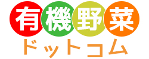
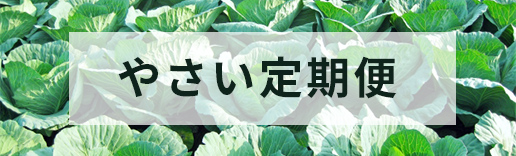
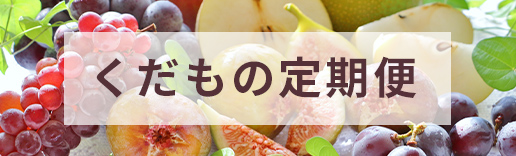

やさいお試し便
くだものお試し便

安心・安全のおいしいお野菜と果物を ご家庭にお届けするためのこだわりをご紹介
生産者について
産地について
[名前] 創造 太郎 [特に好きな野菜] さつまいも [ひとこと] こんにちは！ 地元、滋賀の雄大な自然を利用して、家族で楽しく農業を営んでいます。 家族の健康のために、健康的な食事を提供できるように、有機栽培には特別こだわって生産してきました。 お忙しいママのために、定期便にてご自宅に配送！買い物の手間を省いて、お料理の時間をしっかり確保してください♪
滋賀県は日本一の湖「琵琶湖」と、多くの山々に囲まれた自然豊かな地域です。 自然災害も少なく、安定して農作物を育てることができるので、非常に農業に適した環境であると言われています。 有機野菜ドットコムでは、その自然豊かな滋賀県で長年培ったノウハウを生かした家族農業を営んでいます。 ご家庭に安全・安心のお野菜・果物を定期便にてお届けします！

